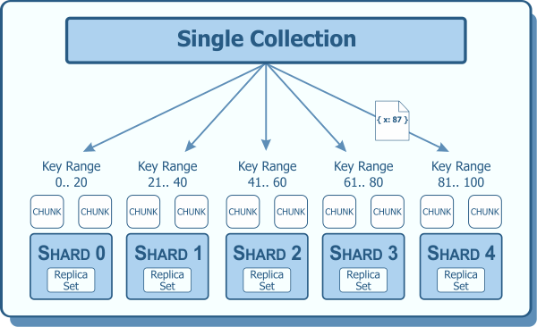

TensorSwitch
Data Format Conversion
Scientific Data Format Conversion at Scale
Diyi Chen
Informatics Analyst
Title Slide
Hello everyone, I'm Diyi Chen. And today, I'll be sharing with you TensorSwitch - which is a tool that converts scientific data between different formats.
Here are the links for tensorswitch.int.janelia.org, and the code is on GitHub under JaneliaSciComp/tensorswitch, develop branch.
In this presentation, I'll walk you through the journey of how TensorSwitch came to be.
The TensorSwitch Journey
From scattered lab requests to production-ready tool
1. Origin → 2. Development → 3. Personal Tool → 4. GUI → 5. AI → 6. Future Improvements & Validations
Navigate → to move through phases, ↓ to dive into details
Journey Overview
Here's the journey of TensorSwitch in six major phases.
- We will start with understanding why we need this in the first place.
- How we solved the technical challenges.
- Which evolved it into something I used for my own productivity.
- Then to creation of a GUI so scientists could use it directly.
- With AI assistant for guidance.
- And finally, to future improvements and validations.
Phase 1: Origin
What is TensorSwitch? Where did it come from?
- Individual lab requests for format conversions
- TensorStore package: the foundation
- Recognizing a common need
↓ Dive deeper into the origin story
Phase 1: Origin
The story begins with individual requests for data format conversions from different labs.
Each request was unique, but there was clearly a pattern emerging.
Let's see how this all started.
The Catalyst: Lab Requests
MengWang Lab
Problem: Broken Zarr2 files
→ Fixed Zarr2 + Zarr3 conversion
Keller Lab
Problem: N5 data from remote server
→ HTTP download + rechunk to Janelia storage
Moe & LICONN
Problem: ND2 and IMS microscopy files
→ Convert to Zarr3 with metadata preservation
Lab Requests
Different lab requests came from different needs:
- MengWang Lab - had broken Zarr2 files that needed fixing and converting to Zarr3, which showed us format handling needed to be robust
- Keller lab - needed to download huge N5 datasets from their HTTP server and rechunk them locally, which requires network transfer support
- Moe's Lab - needed to convert Nikon and Imaris microscopy files to zarr3 with rich ome-zarr metadata
Looking at these requests, I noticed that different formats, different sources, but the same need: which is reliable conversion that preserves what matters.
That's when I realized we need a unified tool, not one-off scripts. So we created TensorSwitch.
The Name: TensorSwitch

TensorStore
Google's Library
Switch
Conversion
Our Tool
Foundation: TensorStore

Efficient Zarr2/Zarr3 operations
Chunk-based I/O optimization
Multidimensional array handling
What We Switch
- Formats: N5 ↔ Zarr2 ↔ Zarr3
- Resolutions: Downsampling resolution levels
- Structures: Rechunking optimization
The Name: TensorSwitch
The name TensorSwitch combines two parts - Tensor from TensorStore, and Switch for conversion.
TensorStore is Google's library for handling multidimensional arrays, which could do:
- Efficient Zarr Reading and writing
- Chunk-based operations without loading everything into memory
- Good performance for large datasets
Switch part means we could:
- Switch between formats - N5 to Zarr, Zarr2 to Zarr3
- Switch resolutions - creating multiscale resolution levels
- Switch structures - rechunking data
If TensorStore is the engine, TensorSwitch is what we built to use it.
Phase 2: Development
Building the Technical Foundation
- Understanding format differences
- Implementing 10 conversion tasks
- Metadata preservation challenges
↓ Explore the technical details
Phase 2: Development
With clear user needs, we entered development phase.
Let's see what makes these formats different.
Understanding Data Formats
N5
Chunked n-dimensional tensors
Parallel read/write support
→ BigDataViewer/Fiji ecosystem
Structure: One file per chunk
Key Feature: Parallel read/write, flexible backends
Best for: Fiji/BigDataViewer workflows
Zarr2
Python-friendly, community standard
→ Broad tool compatibility
Structure: One file per chunk (no sharding)
Key Feature: Wide codec support
Best for: Python workflows
Zarr3
Adds sharding - major improvement
→ Best for large datasets
Structure: Sharding (multiple chunks per file)
Key Feature: Advanced codec pipeline
Best for: Large datasets, cloud storage
ND2 (Nikon)
OME-XML metadata, calibration
→ Proprietary microscope format
Structure: Proprietary binary
Key Feature: Rich acquisition metadata
Need to convert: For analysis workflows
IMS (Imaris)
3D/4D/5D support, rich metadata
→ Proprietary but feature-rich
Structure: HDF5-based
Key Feature: Built-in resolution levels
Best for: Imaris users
TIFF (Tagged Image File Format)
Universal, limited metadata
→ Interchange format
Structure: Single/multi-page files
Chunking: 2D tiles supported; 3D+ via extensions
Need to convert: For modern chunked access
Understanding Data Formats
Why so many formats?
Each format emerged from different communities to solve specific problems
N5 - Not HDF5, came from Saalfeld Lab at Janelia:
- Built for BigDataViewer, needed efficient parallel read/write
- HDF5 had locking issues that made parallel writing slow
- So N5 solved this by storing one file per chunk
Zarr2 - Python-friendly alternative:
- Since python community needed NumPy, dask integration
- So it became the community standard
- It has wide codec support and excellent compression options
- But limited to: one file per chunk
Zarr3:
- Adds sharding on top of zarr2
- which groups multiple chunks into single files
- Solves the millions-of-tiny-files problem
- Without sharding, large datasets create millions of files - which can be expensive on cloud storage and slow on filesystems
IMS - Imaris format:
- Used for complex 3D/4D/5D data visualization
- It's HDF5-based internally with built-in resolution levels
- It needs Imaris - converting to Zarr to opens it up
ND2 - Nikon microscope format:
- Direct output from Nikon microscopes
- Rich metadata: acquisition parameters, channels
- Proprietary binary format - need to extract for open-source tools
TIFF (Tagged Image File Format) - Universal interchange format:
- Tagged Image File Format means metadata organized as tags in the Image File Directory (IFD) header
- Everyone can read TIFF - widely supported
- Standard TIFF supports chunking for 2 dimensions for tiles, there are TIFF extensions that allow for 3 or more dimensions
Format Metadata Structures
N5
One file per chunk for parallel I/O
Zarr2
NumPy-style dtype notation
Separate files: .zarray, .zgroup, .zattrs
No sharding support
Zarr3
Zarr v3 sharding codec groups chunks
Single zarr.json for everything
ND2 (Nikon)
Rich acquisition metadata
IMS (Imaris)
Built-in multiscale structure
TIFF
Just header tags, limited metadata
Format Metadata Structures
Let's see how these formats store their metadata.
N5:
- Uses attributes.json with: dimensions, blockSize, dataType
- Each chunk is a separate file - makes parallel read/write really efficient
Zarr2:
- Uses separate files for metadata: .zarray for array structure, .zgroup for group hierarchy, .zattrs for attributes
- Uses shape instead of dimensions, chunks instead of blockSize
- The NumPy integration is why Zarr2 became so popular in Python data science (dtype notation like less-than-u2 for little-endian unsigned 16-bit)
- Each chunk is a separate file in Zarr2
Zarr3:
- Unified everything into a single zarr.json file
- Has sharding codec - which groups chunks together into one shard file
- Reduces millions of files to thousands -> good for large datasets
ND2:
- Has Python library extracts OME-XML from Nikon's proprietary format
- Includes channel information, Z-stack details, etc
IMS:
- has HDF5 hierarchy: DataSet, ResolutionLevel, TimePoint, Channel
- with built-in resolution levels
TIFF:
- has IFD tags (Image File Directory) in header: Width, Height, Compression, TileWidth, TileHeight, ImageDescription
- Very simple compared to modern formats, but universally supported
Understanding OME Standards
OME = Open Microscopy Environment - A set of standards for microscopy data
1. OME-XML
What it is: XML-based metadata standard for microscopy
Purpose: Describes image dimensions, channels, pixel sizes, time points, acquisition parameters
Stored in: ImageDescription tag → points to subresolutions
2. OME-TIFF
What it is: TIFF files with embedded OME-XML metadata
Purpose: Standard TIFF + rich microscopy metadata in ImageDescription tag
Subresolutions: Stored as separate IFDs (Image File Directories) within the TIFF file
Use case: Widely supported format for microscopy data exchange
3. OME-ZARR (aka OME-NGFF - Next Generation File Format)
What it is: Zarr-based format with OME metadata for cloud-native microscopy
Version history:
- v0.4: Zarr2 format, multiscale metadata in .zattrs file
- v0.5: Zarr3 format, multiscale metadata in zarr.json → attributes/ome (current)
- v0.6: Zarr3 with coordinate transformations (developed by John Bogovic) (future)
Why needed: Chunked access + multiscale levels + cloud storage optimization
Understanding OME Standards
OME (Open Microscopy Environment) standards define how we store and describe microscopy data.
There are three related standards for microscopy data.
OME-XML is the core metadata standard. OME-TIFF put that into TIFF files, and OME-ZARR is the modern evolution using Zarr instead of TIFF for cloud and chunking benefits
OME-XML:
- is the core metadata standard that describes everything about a microscopy image
- Stored in the ImageDescription tag
- Point to subresolutions for multiscale viewing
OME-TIFF:
- Takes standard TIFF format and embeds OME-XML in the ImageDescription tag
- Subresolutions are stored as separate IFDs (Image File Directories) within the same TIFF file
- This gives you the universal compatibility of TIFF plus rich microscopy metadata
- Widely used for data exchange between institutions
OME-ZARR (OME-NGFF):
- OME-NGFF stands for OME Next Generation File Format
- Built on Zarr for chunked access and cloud storage
- Version 0.4 used Zarr2 with multiscale metadata in .zattrs file
- Version 0.5 (current) uses Zarr3 with metadata in zarr.json under attributes/ome
- Version 0.6 (future) will add coordinate transformations, being developed by John Bogovic
- Combines OME metadata with Zarr chunking and cloud optimization
Why Chunks and Shards Matter
Chunking Concept (All Formats)
Problem: Can't load 100GB dataset into memory
Solution: Break into small pieces (chunks)
Example: 128×128×64 voxels = 2 MiB for uint16
Benefits:
- Process one chunk at a time
- Parallel processing on clusters
- Only load needed regions
Sharding (Zarr v3 Only)
Problem: Millions of chunk files (Zarr2, N5)
Example: 1TiB dataset with 1MiB chunks = 1,048,576 files
Zarr v3 Solution: Group chunks into shard files (e.g., 512 chunks per shard)
Result: 2,048 files instead of 1,048,576 ✓
compressor: {id: 'zstd', level: 5}
Zarr3 without sharding:
codecs: [{name: 'bytes'}, {name: 'zstd', level: 1}]
Zarr3 WITH sharding:
codecs: [
{name: 'sharding_indexed',
chunk_shape: [128,128,64],
codecs: [ ← Inner: compress chunks
{bytes},
{zstd, level:5}
],
index_codecs: [ ← Outer: shard index
{bytes},
{crc32c}
]
}
]
Multiscale Resolution Levels
Concept: Store same data at multiple resolutions
Levels: s0 (full), s1 (half), s2 (quarter), etc.
Benefit: Fast visualization at any zoom level
Sharding Concept
Multiple chunks grouped into one shard file
Sharding Example

Real-world sharding structure
Why Chunks and Shards Matter
Let's briefly explain three fundamental concepts for large-scale data.
Chunking - Breaking data into manageable pieces:
- All modern formats use it - N5, Zarr2, Zarr3
- Such as instead of loading 100GB dataset into memory, break into small pieces like 128×128×64 voxels
- Each chunk might be 2MiB (mebibyte) for uint16 data
- Process one chunk at a time, enables parallel processing
Calculation: 128×128×64 voxels = 1,048,576 voxels × 2 bytes (because uint16 = 2 bytes, since 1 byte = 8 bits) = 2,097,152 bytes ÷ 1024 (1024 bytes = 1 kibibyte KiB) = 2,048 KiB ÷ 1024 (1024 kibibytes = 1 mebibyte MiB) = 2 MiB
Note: uint16 = a 16-bit unsigned integer = 2 bytes; <u2 in NumPy notation = 2 bytes = unsigned 16-bit little-endian integer
Sharding - (Zarr3 only)
- Groups chunks together into shard files such as 512 chunks per shard file
- then 1TiB (tebibyte) dataset will create 2,048 files instead of 1 million with sharding
- which is why we recommend Zarr v3 for large datasets
Example calculation: 1TiB (tebibyte) dataset with 1MiB (mebibyte) chunks
Calculation process: 1 TiB = 1024 GiB = 1024 × 1024 MiB = 1,048,576 MiB
Number of chunks: 1,048,576 MiB ÷ 1 MiB per chunk = 1,048,576 chunks (meaning 1,048,576 separate files without sharding)
Cloud storage charges per request - 1,048,576 files is very expensive
Zarr v3 introduces sharding codec - groups chunks, such as: 512 chunks per shard file
Sharding result: 1,048,576 chunks ÷ 512 chunks per shard = 2,048 shard files
So 2,048 files instead of 1,048,576 - but can still access individual chunks efficiently via internal index
Codec comparison:
- Zarr2: Simple compression - just "zstd level 5"
- Zarr3 no sharding: Same compression, different syntax - bytes → zstd
- Zarr3 WITH sharding: Two-layer compression:
- Inner layer: compress chunks (bytes → zstd)
- Outer layer: sharding_indexed groups compressed chunks + adds index (bytes → crc32c for integrity)
- Sharding adds minimal overhead but saves millions of files
Multiscale resolution levels:
- Store same data at multiple resolutions: s0 full, s1 half, s2 quarter, etc
- Good for fast visualization at any zoom level
Phase 3: Personal Tool
Organizing for Efficiency
- Replacing ad-hoc scripts
- Consistent interface across tasks
- Command-line efficiency gains
↓ See how organization improved workflow
Phase 3 Timeline Card
At this stage, TensorSwitch became my primary tool for conversion requests.
Instead of writing new scripts for each lab request, I had one unified command-line interface
Let me show you what it offered.
The Command-Line Interface
10 Conversion Tasks, One Unified Interface
ND2/IMS/TIFF → Zarr2/Zarr3
N5 → Zarr2 or N5
Zarr2 → multi-resolution levels
Zarr3 → sharded resolution levels
Why TensorStore + Dask?
TensorStore (Speed)
- C++ backend → fast I/O
- Multi-threaded parallel chunk access
- Supports N5, Zarr2, Zarr3, Precomputed
Dask (Scale)
- Distributes across cluster nodes
- Memory-efficient chunk processing
- LSF JobQueue integration
Why TensorSwitch Wrapper?
TensorStore Problems:
- ❌ Complex API (specs, kvstores, codecs)
- ❌ Easy to misconfigure → OOM crashes
- ❌ Can spawn too many cluster jobs
- ❌ No format auto-detection
TensorSwitch Solutions:
- ✓ Simple one-command API
- ✓ Safe memory/chunk defaults
- ✓ Job limits prevent cluster overload
- ✓ Auto-detects formats & metadata
Comparison vs Other Tools
| Tool | Backend | Cluster | N5 | Easy API |
|---|---|---|---|---|
| bioformats2raw | zarr-python | ✓ | ✓ | ⚠️ Slow |
| ngff-zarr | zarr-python | ❌ | ✓ | ✓ |
| zarr-python v3 | Pure Python | ✓ | ❌ | ✓ |
| TensorStore | C++ (fast) | ✓ | ✓ All | ❌ |
| TensorSwitch | TensorStore | ✓ | ✓ All | ✓ |
Personal Tool Deep Dive: CLI Power
TensorSwitch covers 10 different conversion tasks at this point - all through one unified interface.
Why TensorStore + Dask combination:
- TensorStore provides speed - with C++ backend for fast I/O, multi-threaded parallel chunk access
- Supports all formats
- Dask provides scale - distributes work across cluster nodes, memory-efficient chunk processing, LSF JobQueue integration
- Together: TensorStore = speed, Dask = scale - will gives me fast parallel processing on large datasets
Why TensorSwitch wrapper needed on top of TensorStore:
- TensorStore is powerful but difficult to use by itself
- with Complex API - requires understanding specs, kvstores, codec configurations
- Easy to misconfigure - wrong chunk size or memory settings cause out-of-memory crashes
- Can spawn too many cluster jobs and overwhelm the LSF scheduler
- No automatic format detection - must manually specify everything
- TensorSwitch simplifies the API, provides safe defaults, auto-detects formats
For other tools:
- bioformats2raw - uses zarr-python backend which is slower than TensorStore
- ngff-zarr - not scalable on cluster
- zarr-python version 3 - does not support N5 format anymore
- TensorStore - difficult to use by itself
- TensorSwitch - combines TensorStore's speed and format support with simplified API and cluster safety
Let me show you how I used this in a real case.
Behind the Scenes: The Expert Knowledge Required
Structure
├── __main__.py # Dispatcher
├── utils.py # Common utilities
├── dask_utils.py # Cluster integration
└── tasks/
├── nd2_to_zarr3_s0.py
├── nd2_to_zarr2_s0.py
├── ims_to_zarr3_s0.py
├── ims_to_zarr2_s0.py
├── tiff_to_zarr3_s0.py
├── tiff_to_zarr2_s0.py
├── n5_to_zarr2.py
├── n5_to_n5.py
├── downsample_zarr2.py
└── downsample_shard_zarr3.py
Component Roles
__main__.py
Entry point, task routing, CLI argument parsing
utils.py
OME-Zarr metadata generation, format detection helpers
dask_utils.py
LSF/Dask JobQueue integration, cluster job submission
tasks/*.py
Individual conversion implementations, each handling one specific task
Example: LICONN Lab → WebKnossos Upload
📋 Formats: ND2 + IMS files (multiple volumes)
🎯 Target: Zarr3 with sharding for WebKnossos
Decision Pipeline (What I Had to Figure Out)
Check input path
List all ND2/IMS files
Extension check
ND2 + IMS confirmed
Zarr3 for WebKnossos
Enable sharding for storage
nd2_to_zarr3_s0
ims_to_zarr3_s0
downsample_shard_zarr3
2 cores each
8 parallel volumes
Project: liconn
--base_path /groups/liconn/liconn/FlyLICONN/Webknossos_internal/file.nd2 \
--output_path /groups/liconn/liconn/data_internal/FlyLICONN_zarr_converted/file.zarr \
--cores 2 --num_volumes 8 --project liconn --submit
--base_path /groups/liconn/liconn/data_internal/FlyLICONN_zarr_converted/file.zarr/s0 \
--cores 2 --num_volumes 8 --project liconn --submit
Code Organization & Workflow
The code is organized by task - each task is its own module.
Here's a real example from LICONN lab - prepare data for WebKnossos.
The decision steps:
- Step 1: Check what formats - mix of ND2 and IMS files
- Step 2: Choose Zarr3 with sharding for WebKnossos to save storage
- Step 3: Pick tasks - two steps: First convert to Zarr3 s0, then downsample s0 data to create multi-resolution levels.
- Step 4: Configure cluster - 2 cores, 8 parallel volumes, liconn billing
8 parallel volumes means the chunks get split across 8 cluster jobs running at the same time
All this decision-making was manual, which needs expertise in:
- Format knowledge (Zarr3 with sharding)
- Resource knowledge (cores and parallel jobs)
- Task knowledge (which scripts, what order)
- Cluster knowledge (submission and billing)
Phase 4: GUI
Empowering Scientists
- Built with Panel (Python web framework)
- Smart Mode: auto-detection
- Manual Mode: full control
- Lab paths integration
↓ Explore the GUI features
Phase 4 Timeline Card
After the command line interface was working, I realized we could make it more convenient.
- Scientists might know less about data formats
- Some scientists want to convert small datasets themselves
- A web-based GUI would make TensorSwitch accessible to everyone
So I used Panel to built the GUI.
Panel a Python library lets me build web interfaces directly in Python without JavaScript
Let me walk through how the GUI works.
Welcome & Overview


Welcome & Overview
The GUI starts with a simple welcome page with brief introduction of what is TensorSwitch and what it does.
Move on to the conversion page, which shows only 3-step workflow.
Step 1: Specify Input and Output Paths


Step 1: Input and Output Paths
First step is telling TensorSwitch where the data is and where it should go.
- Left screenshot shows basic path input
- Right screenshot shows the path helper for lab storage navigation
- Users can browse using the helper or type paths directly
Step 2: Configure Conversion Strategy

Step 2: Conversion Strategy
Step 2 is where choose between Smart Mode and Manual Mode.
- Smart Mode automatically detects the format based on input file path
- Manual Mode gives the full control on select the specific task
- Most users will use Smart Mode
Step 2A-B: Smart Mode Detection & Configuration
.png)
.png)
Smart Mode Auto-Detection
Smart Mode has two parts.
- Step 2A detects the input format automatically
- Shows detected format, file size, and dimensions
- Step 2B lets user configure output format and downsampling levels
- Shows conversion plan preview so user know what will happen
Step 2C: Manual Task Selection
.png)
Manual Mode Task Selection
Manual Mode is for users who know exactly what task they need.
Choose the specific conversion task from the dropdown.
Step 3: Configure Execution & Run


Step 3: Execution Configuration
Step 3 is where user configure how the conversion runs.
- User could Run locally on the machine
- Or uncheck the box to Run on cluster with LSF or Dask
- Both options let user set shard (for Zarr3), OME-Zarr structure, and memory limits (memory limits control how much RAM the process can use, preventing out-of-memory crashes)
- Cluster adds: lab billing, cores, wall time, num_volumes
- Advanced option includes: Dask JobQueue for distributed processing (Dask spreads chunks across multiple cluster jobs dynamically, while LSF submits fixed jobs upfront)
Job Preview & Successful Submission


Job Preview and Submission
Before user submit, the GUI shows a preview of everything.
Job preview with cost estimates and processing time (here the estimated cost is the max cost of set wall time plus number of cores plus num_volumes, but I need to investigate a bit more on this).
Then successful submission confirmation will show after submitted job.
Phase 5: AI Power
Intelligent Assistance
- OpenAI-powered chat assistant
- Context-aware responses
- Parameter recommendations
- Troubleshooting help
↓ See AI capabilities in action
Phase 5 Timeline Card
Even with Smart Mode and the GUI, users might still have questions.
- What does this parameter mean?
- Why should I use Zarr3 vs Zarr2?
- How many cores should I use?
- So I added an AI assistant to answer these questions in real-time
AI Assistant Interface

Why AI Assistant?
Even with Smart Mode and GUI, users still had questions about parameters, format choices, and resource settings. AI provides instant, context-aware answers without leaving the interface.
What AI Can Do
- 🎯 Format detection guidance
- ⚙️ Parameter optimization
- 📁 Lab path assistance
- 🔄 Workflow recommendations
- 🚀 Conversion advice
- ❓ Real-time support
- 🤖 Apply settings to GUI (Phase 2)
User Benefits
- ✓ Faster learning curve
- ✓ Fewer configuration mistakes
- ✓ Better resource utilization
- ✓ Immediate answers
- ✓ Reduced support burden
- ✓ Cost & Privacy: ~$0.10 (ten cents)/session
- ✓ Optional feature
AI Assistant Interface
Left side shows the AI chat interface.
Why we added AI - users still have questions even with Smart Mode.
What AI can do such as - format guidance, parameter optimization, lab paths, workflow recommendations, and can apply settings to GUI.
It helps users with: faster learning, fewer mistakes, immediate answers. Cost is about $0.10 (ten cents) per session.
AI Example: Setting Optimal Parameters

AI Example: Setting Optimal Parameters
Here is a real example of how AI helped with parameter optimization.
User asks AI to set optimal parameters for the file.
AI analyzes file characteristics from smart format detection.
Then, provides specific recommendations tailored to this file.
AI Automation: Step 1 - Ask for Help
User asks AI to optimize core count

AI Automation: Step 1 - Ask for Help
This shows the first step of AI automation.
Although the default core is set to 2 cores.
I asked AI to optimize to 4 cores instead.
AI will respect user's decision, with 4 cores even though it was not recommended initially.
AI Automation: Step 2 - Apply Changes
AI asks if we want it to apply the changes. We can type "yes" or click the button. Then the form updates automatically.


AI Automation: Step 2 - Apply Changes
This slide shows the complete AI automation workflow.
After I tell AI I want 4 cores, AI asks if I want it applied to the GUI for me.
Two ways to confirm - type "yes" in chat, or click the button.
Then, the GUI interface updates automatically to 4 cores.
AI Pipeline Structure & Logic
How we built the AI assistant to be helpful and accurate
AI Pipeline Flow
• TensorSwitch knowledge base
• System parameters
• TensorSwitch-specific knowledge
• Parameter constraints
• Optional: Apply to GUI
How We Restrict AI's Answers
System Prompt (from tensorswitch_assistant.py)
data conversion assistant...
CORE GUIDANCE PRINCIPLES:
1. ALWAYS guide users to Smart Mode first
2. Smart Mode auto-detects formats
3. Only suggest Manual Mode for advanced users
IMPORTANT: When user requests specific parameter values
(like "use 4 cores"), HONOR their request. Users know their needs.
IMPORTANT RULES:
- ONLY help with TensorSwitch questions
- Always recommend Smart Mode first
- Give SPECIFIC parameter recommendations
TensorSwitch Knowledge:
{json.dumps(knowledge, indent=2)}"""
Context Injection Example
"input_file": "data.nd2",
"file_size": "5.7GB",
"current_cores": 2,
"output_format": "zarr3",
"mode": "smart"
}
# AI sees full context
query = f"Given: {context}, {user_question}"
AI is scoped to TensorSwitch only. Can't help with unrelated topics. Always has access to current GUI state so recommendations are context-aware and accurate.
AI Pipeline Structure & Logic
Left side: 4-stage AI pipeline flow.
- Stage 1: User query - capture question as string
- Stage 2: Context gathering - collect current GUI state (using gui_state object)
- Stage 3: AI processing - OpenAI API call (openai.chat.completions.create with context via f-string)
- Stage 4: Response and actions - parse AI response and apply to GUI if requested
Right side: How we control AI behavior.
- System prompt with restrictions (Only TensorSwitch topics, recommend Smart Mode, honor user requests like "use 4 cores")
- TensorSwitch Knowledge injected as JSON - 10 tasks, formats, parameters, troubleshooting
Context injection:
- We create a context dictionary with current GUI values like: input_file, file_size
- This context gets combined with user's question using f-string: "Given: {context}, {user_question}"
- AI sees both the question AND the current GUI state, so recommendations are specific to the user's actual situation
- For example, if user has a 5.7GB ND2 file loaded and asks about cores, AI knows the file size and can give accurate recommendations
Key principle: AI scoped to TensorSwitch only, always has GUI state for context-aware recommendations.
Phase 6: Validation & Future
Where We Are & Where We're Going
- Core features tested and working
- More comprehensive testing needed
- Future: More formats, better AI, enhanced features
↓ See current status and future plans
Phase 6 Timeline Card
Phase 6 is where we are now and where we're heading next.
Current Status: Production & Testing
✅ What's Working
- Some tests passing - Basic conversions validated
- Core conversion tasks working with sample data
- OME-Zarr metadata generation functional
- Deployed on VM - tensorswitch.int.janelia.org
- Open to try - Welcome feedback and testing
Real Data Tested
- ND2: 5.7GB files
- IMS: 3.8GB files
- TIFF: 961MB stacks
⏳ What Needs More Work
- Cluster submission - LSF/Dask testing
- Edge cases - Large files, unusual dimensions
- Comprehensive testing - All feature combinations
- AI fixes - Some buttons don't apply correctly
Bottom line: Core conversions work well. GUI features and edge cases need more testing.
Current Status
Currently:
- Some tests have passed - basic conversions are functional
- OME-Zarr metadata generation is functional
- Website tensorswitch.int.janelia.org - is open to try
What needs to be done in the next stage are:
- Cluster submission with LSF and Dask needs testing
- Edge cases - very large files, unusual dimensions
- Comprehensive testing of all feature combinations
- AI button fixes - some don't apply correctly yet
Future Improvements
📊 More Formats & Testing
- HDF5, CZI, LIF support
- Comprehensive edge case testing
- All feature combinations validated
🤖 Enhanced AI
- Fix button application issues
- Learn from successful conversions
- Smarter parameter recommendations
🎨 Better UX
- FileSelector widget for visual browsing
- Batch file operations
- Improved error messages
📈 Analytics & Security
- Performance tracking and history
- Figure out cluster charge system more accurately
- Okta authentication gateway
- Introduce to more users for validation
💬 Open for suggestions and feedback!
Future Plans
Four main areas of improvement:
- More formats and testing - HDF5, CZI, LIF support, edge cases
- Enhanced AI - fix button issues, smarter recommendations
- Better UX - FileSelector widget, batch operations, improved error messages
- Analytics and security - performance tracking, figure out cluster charge system more accurately, Okta authentication
Open for suggestions and feedback.
Thanks to
Mark Kittisopikul
Stephan Preibisch
Nathan Soules
Scientific Computing Team
Thank You Slide
Really appreciate Mark, guided me throughout the entire journey as well as Stephan, Nathan and the SciComp team.